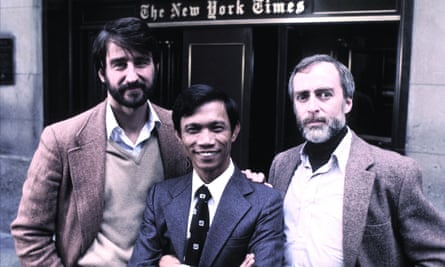

Three locations used by Cambodia’s brutal Khmer Rouge regime as torture and execution sites 50 years ago have been added by Unesco to its world heritage list.
The three locations were inscribed to the list by the UN cultural agency on Friday during the 47th session of the World Heritage Committee in Paris.
The inscription coincided with the 50th anniversary of the rise to power by the communist Khmer Rouge government, which caused the deaths of an estimated 1.7 million Cambodians through starvation, torture and mass executions during a four-year reign from 1975 to 1979.
Unesco’s world heritage list lists sites considered important to humanity and includes the Great Wall of China, the Pyramids of Giza in Egypt, the Taj Mahal in India and Cambodia’s Angkor archaeological complex.
The three sites listed on Friday include two notorious prisons and an execution site immortalised in the Hollywood film The Killing Fields.
The Tuol Sleng Genocide Museum, located in the capital Phnom Penh, is the site of a former high school used by the Khmer Rouge as a notorious prison, better known as S-21. About 15,000 people were imprisoned and tortured there.
The M-13 prison, located in rural Kampong Chhnang province in central Cambodia, also was regarded as one of the main prisons of the early Khmer Rouge.
Choeung Ek, located about 15km (10 miles) south of the capital, was used as an execution site and mass grave. The story of the atrocities committed there are the focus of 1984’s The Killing Fields , based on the experiences of New York Times photojournalist Dith Pran and correspondent Sydney Schanberg.
Journalist Sydney Schanberg (right) with Sam Waterson (left), who played him in 1984’s The Killing Fields and Haing Ngor (centre), who played Dith Pran.Photograph: Snap Stills/REX/Shutterstock
The Khmer Rouge captured Phnom Penh on 17 April 1975 and immediately herded almost all the city’s residents into the countryside, where they were forced to toil in harsh conditions until 1979, when the regime was driven from power by an invasion from neighbouring Vietnam.
Cambodia’s prime minister, Hun Manet, issued a message on Friday directing people to beat drums simultaneously across the country on Sunday morning to mark the Unesco listing.
“May this inscription serve as a lasting reminder that peace must always be defended,” Hun Manet said in a video message posted online. “From the darkest chapters of history, we can draw strength to build a better future for humanity.”
Youk Chhang, the executive director of the Documentation Centre of Cambodia in Phnom Penh, said the country was “still grappling with the painful legacies of genocide, torture and mass atrocity”. But naming the three sites to the Unesco list will play a role in educating younger generations of Cambodians and others worldwide.
“Though they were the landscape of violence, they too will and can contribute to heal the wounds inflicted during that era that have yet to heal,” he said.